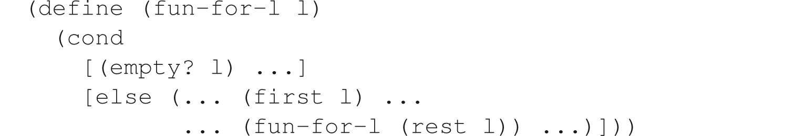
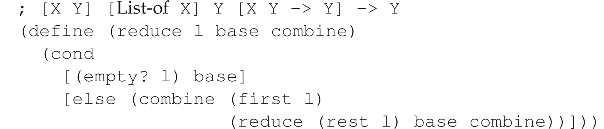
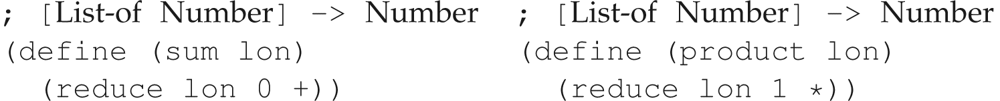

15.4 Abstractions from Templates
The first two chapters of this part present many functions based on the same template. After all, the design recipe says to organize functions around the organization of the (major) input data definition. It is therefore not surprising that many function definitions look similar to each other.
Indeed, you should abstract from the templates directly, and you should do so automatically; some experimental programming languages do so. Even though this topic is still a subject of research, you are now in a position to understand the basic idea. Consider the template for lists:

It contains two gaps, one in each clause. When you use this template to define a list-processing function, you usually fill these gaps with a value in the first cond clause and with a function combine in the second clause. The combine function consumes the first item of the list and the result of the natural recursion and creates the result from these two pieces of data.
Now that you know how to create abstractions, you can complete the definition of the abstraction from this informal description:

It consumes two extra arguments: base, which is the value for the base case, and combine, which is the function that performs the value combination for the second clause.
Using reduce you can define many plain list-processing functions as “one liners.” Here are definitions for sum and product, two functions used several times in the first few sections of this chapter:

For sum, the base case always produces 0; adding the first item and the result of the natural recursion combines the values of the second clause. Analogous reasoning explains product. Other list-processing functions can be defined in a similar manner using reduce.